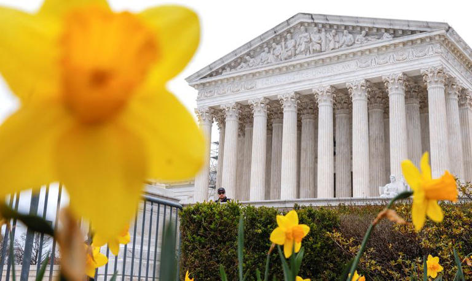

YouTube case at US Supreme Court could shape protections for ChatGPT and AI

WASHINGTON (Reuters) - When the U.S. Supreme Court decides in the coming months whether to weaken a powerful shield protecting internet companies, the ruling also could have implications for rapidly developing technologies like artificial intelligence chatbot ChatGPT.
View On the Original Site
ChatGPT and Generative AI in Payments: Reality, Hype, What's Next, and How to Prepare

Generative AI is set to revolutionize various sub-verticals within the payments industry. The most significant impact is expected to be seen in payment networks, mobile wallet providers, and issuing banks.
View On the Original Site